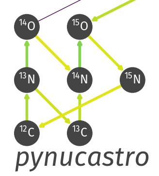

Astrophysics Simulation Codes
-

Castro: compressible hydrodynamics
Castro is our fully compressible hydrodynamics code built on the adaptive mesh refinement library AMReX. It supports self-gravity, diffusion, general equations of state, nuclear reactions, and more. -

MAESTROeX: low Mach number stratified flows
MAESTROeX is a low Mach number hydrodynamics code built on the AMReX library. It supports a general equation of state and is designed for problems involving stellar convection. -
StarKiller microphysics
StarKiller Microphysics is a collection of reaction networks, EOSes, and other physics modules for use in stellar hydrodynamics codes.
-
pyro: a python hydro code
pyro is a tutorial code designed to introduce new students into computational hydrodynamics. The python code implements 2-d solvers for linear advection, compressible hydrodynamics, multigrid, implicit diffusion, and incompressible hydrodynamics. -

pynucastro: python for nuclear astrophysics
pynucastro interfaces to nuclear reaction rate databases and allows for the exploration of reaction networks and the output of network ODE righthand sides for integrating in a stellar physics code. -
hydro1d: a 1-d compressible hydro solver
hydro1d is a simple 1-d compressible hydrodynamics code that implements piecewise constant (Godunov), piecewise linear, and piecewise parabolic (PPM) slope reconstruction in a finite-volume framework. Some simple test problems (e.g. Sod) are included.
Astronomy / Numerical Methods Education Codes
-
Intro astronomy animations
A set of introductory astronomy animations (Kepler's laws, Doppler shifts, parallax, ...) coded in python. These are also available on YouTube. -
Monte Carlo Demo (Poker Odds)
A simple demonstration of Monte Carlo techniques—computing the odds of the different hands in a straight 5-card poker game.
-
Numerical methods class codes
A number of examples of various methods (mostly in python) from my class Numerical Methods for (Astro)Physics. Some of these are repeated below.
Simple Numerical PDE Examples
-
Godunov methods for linear advection
A simple 1-d second-order accurate finite-volume method for the linear advection equation. A choice of reconstruction is provided: Godunov (piecewise constant), piecewise linear, and piecewise parabolic (PPM). The code is structured to with the subroutines you would find in a typical hydrodynamics code.
Fortran version:
advect.f90python version (no ppm):
advection.py -
Multigrid examples
A simple python class for solving 1-d Poisson and constant-coefficient Helmholtz equations on a finite-volume grid. The driver program (mg_test.py) solves uxx = sin(x), u(0)=0, u(1)=0. The discretization is second order (mg-converge.png).Also see pyro for a 2-d solver.
-
Diffusion
Simple 1-d second-order explicit and implicit diffusion codes. The implicit code uses a Crank-Nicolson time discretization and the banded matrix solver from SciPy.diffusion_explicit.py
diffusion_implicit.pyAlso see pyro for a 2-d solver.
{kind=link}
-
2nd order finite volume method for Burgers' equation
A simple second-order accurate finite-volume method for the 1-d Inviscid Burgers' Equation:
ut + [1/2 u2]x = 0
A choice of limiters is provided, and periodic BCs are implemented. The code is structured to with the subroutines you would find in a typical hydrodynamics code.Fortran version:
burger.f90python version:
burgers.py -
Viscous Burgers' equation solver
Solve:
ut + [ 1/2 u2 ]x = ε uxx
using a second-order Godunov method for advection and Crank-Nicolson implicit diffusion for the viscous term. The two processes are coupled together. -
Diffusion-reaction equation
Solve:
φt = κ φxx + (1/τ) R(φ)
using Crank-Nicolson diffusion and Strang-split reactions. This setup gives rises to a spreading burning front.
Parallel Programming
-
OpenMP Relaxation Solver of Poisson's Equation
Solve the 2-d Poisson equation with pure relaxation (we do a fixed number of iterations). This is parallelized with OpenMP. -
MPI Relaxation Solver of Poisson's Equation
Solve the 2-d Poisson equation with pure relaxation (we do a fixed number of iterations). This is parallelized with MPI, doing a one-dimensional domain decomposition in the x direction.
-
Parallel I/O Tutorial
A simple parallel I/O tutorial showing various ways to output data from a parallel hydrodynamics code into a single HDF5 file.
Utilities / Other Examples
-
Simple Backup Script
A simple script for automatically backing up several directories in your home directory to another disk mounted on your local system. To have this run automatically, set it up as a cron job. -
Fortran Makefile Dependency Generator
A simple simply python script to generate dependency pairs for Fortran 90 source files for use in makefiles.
-
Research Journal
A python script to manage a research journal / logbook in restructured text / Sphinx. It is distributed (uses git under the hood), so you can use it on all of the machines you work on and keep things in sync, and it is commandline driven, so the barrier to entry to make a journal entry is very low. It supports images in an entry, editing previous entries, and has simple sub-commands to build and display your web-based journal.